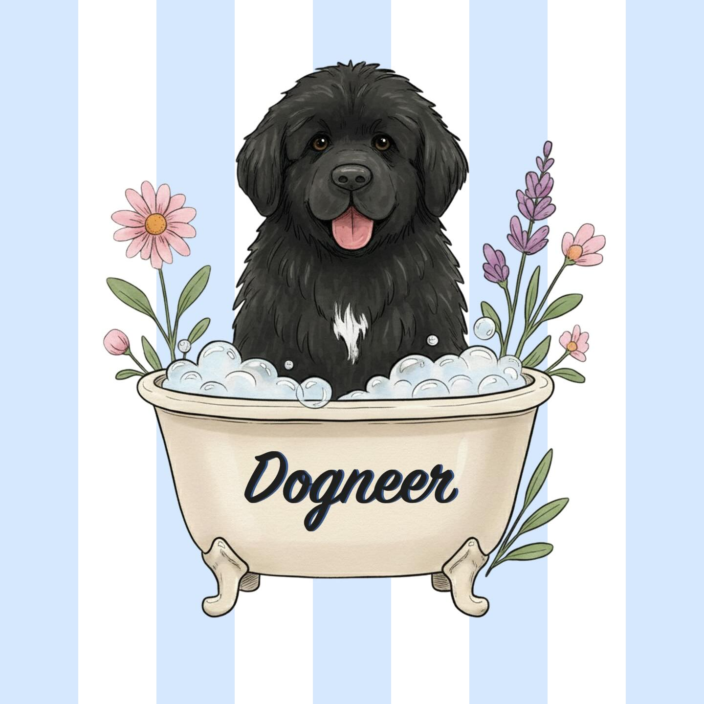

Be cool, be Dogneer
Dogneer és una perruqueria canina professional a Sant Cugat del Vallès, amb atenció personalitzada per a cada mascota i una tenda d'accessoris. Cuidem el teu gos amb productes de qualitat i tractaments adaptats al seu tipus de pelatge i a la seva sensibilitat.
Oferim banys relaxants, perruqueria específica per a cada raça, desllanats i higiene completa, sempre amb un tracte suau perquè la teva mascota se senti segura i tranquil·la.
Productes i accessoris per al teu pelut
A la tenda trobaràs alimentació, joguines, collars, llits i productes de cura. Treballem amb marques reconegudes i materials respectuosos perquè tant tu com el teu animal tingueu la millor experiència.
Perruqueria canina de confiança a Sant Cugat del Vallès
Som un espai proper i amb un servei atent per a famílies que volen el millor per al seu gos. El nostre objectiu és que cada gos surti net, cuidat i feliç, i que tu el puguis deixar en mans expertes amb tota tranquil·litat. Demana cita o passa a veure'ns.
